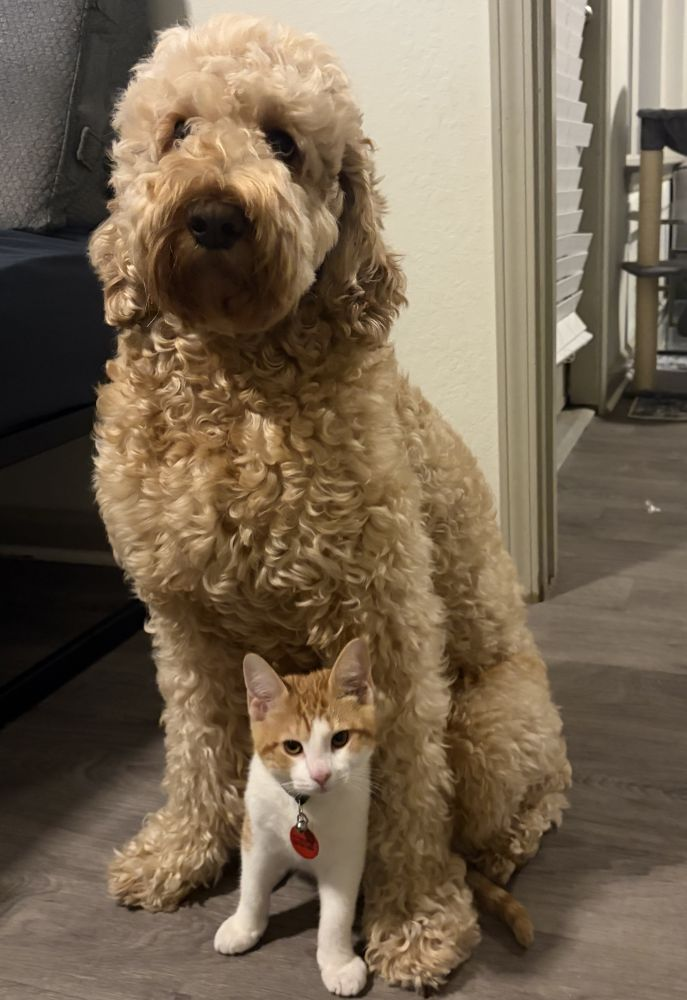

Introduction

- Personal Background: I am a 27 year old “Adult student” attending UNCC. I am also a Military Veteran using my benefits to further my education and achieve some goals I always had (i.e obtaining a college degree) from a young age.
- Professional Background: I have never worked in a technical field that requires me to do anything I'm currently learning for my degree. However, I do have some mechanical experience and other blue collar job experience.
- Academic Background: Computer Science, Senior, class of Fall 2027.
- Primary Computer: Windows Surface Pro, Windows, Laptop, My home office.
-
Courses I’m Taking:
- MATH 1242 - Calculus II: I’m taking this course because it is a degree requirement.
- ITIS 3135 - Front-End Web Application Development: I’m taking this course to brush up on my front-end development skills.
- ITIS 3310 - Software Arch & Design: I’m taking this course because I thought it would help further my knowledge and prepare me for post graduation.